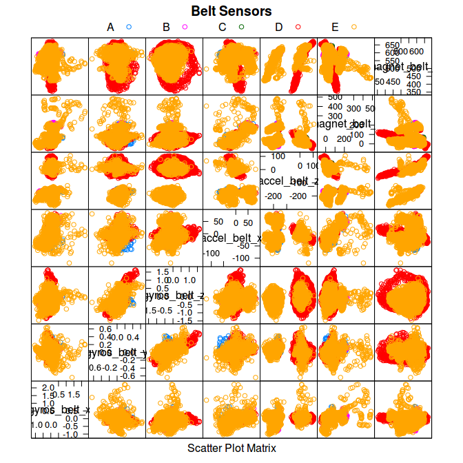
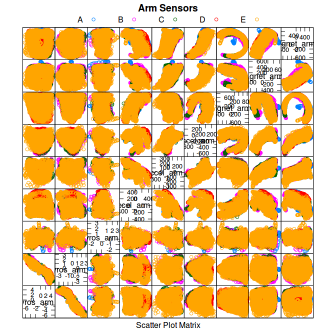
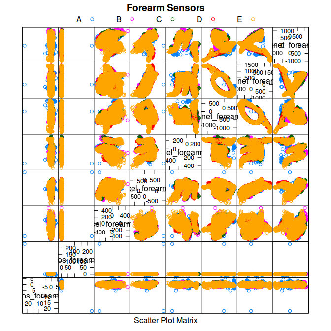
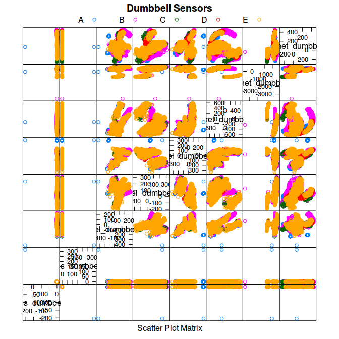

Summary
In this project our goal is to predict, through machine learning techniques, if a weight lifiting exercise is being done properly.
We have data from accelerometers put on the belt, forearm, arm, and dumbbell of six young healthy participants who were asked to perform one set of 10 repetitions of the Unilateral Dumbbell Biceps Curl in five different fashions:
- exactly according to the specification (Class A),
- throwing the elbows to the front (Class B),
- lifting the dumbbell only halfway (Class C),
- lowering the dumbbell only halfway (Class D)
- and throwing the hips to the front (Class E).
Class A corresponds to the specified execution of the exercise, while the other 4 classes correspond to common mistakes.
We described how we have built our model, how we used cross validation, what’s the expected out of sample error and why we made the choices we did.
After building a machine learning algorithm, we will also use our prediction model to predict 20 different test cases. This prediction scored 100/100 on Coursera.
The data for this project come from this source: http://groupware.les.inf.puc-rio.br/har. They have been very generous in allowing their data to be used for this kind of assignment.
Qualitative Activity Recognition of Weight Lifting Exercises dataset: Velloso, E.; Bulling, A.; Gellersen, H.; Ugulino, W.; Fuks, H. Qualitative Activity Recognition of Weight Lifting Exercises. Proceedings of 4th International Conference in Cooperation with SIGCHI (Augmented Human ’13). Stuttgart, Germany: ACM SIGCHI, 2013.
Read more: http://groupware.les.inf.puc-rio.br/har#wle_paper_section#ixzz4nDBhFq9c
Data processing data and feature selection
Features by choice
library(data.table)
library(rmarkdown)
library(knitr)
library(caret)
dados <- fread("dados/pml-training.csv")
dados.test <- fread("dados/pml-testing.csv")
all.features <- names(dados)There are 160 different features.
Features like avg, total, roll, pitch and yaw weren’t used in our model. Those are the pre-processed and new covariates created by the authors of the study, but they aren’t helpful for classification trees, as we saw on covariate creation classes.
As we see it, this is a classification problem, so we chose classification trees methods.
Thus, we decided to work with the raw data from accelerometers, magnets and gyroscopes.
# data from instruments
# loogking for accel, magnet and gyros between all the features
sel.features <- c("^accel", "magnet", "gyros")
# getting selected features indexes
indice.sel.features <- sapply(sel.features, function(x) {
grep(x, all.features)
}
)
indice.sel.features <- c(indice.sel.features[,1],
indice.sel.features[,2],
indice.sel.features[,3])
indice.sel.features <- sort(indice.sel.features)
# subsetting for selected features
dados.instrumentos <- subset(dados, select = c(160, 6:7,
indice.sel.features))
# checking for NAs
nas <- apply(dados.instrumentos, 2, function(x) sum(is.na(x)))
# transform classe and window information on factors
dados.instrumentos$classe <- as.factor(dados.instrumentos$classe)
dados.instrumentos$new_window <- as.factor(dados.instrumentos$new_window)
# Data already computed
# indice <- all.features[-indice.sel.features]
# dados.computed <- subset(dados, select = c(indice))
# lista.na <- apply(dados.computed, 2, function(x) sum(is.na(x)))
# lista.na[lista.na > 19000]
# var.podres <- names(lista.na[lista.na > 19000])
# indice.var.podres <- which(names(dados.computed) %in% var.podres)
# indice.var.podres
# dados.computed <- subset(dados.computed, select = -indice.var.podres)
# dados.computed <- dados.computed[,-c(1:5)]
# str(dados.computed)This decision reduces our modelling task from working with 160 to only 39 features.
After this features elimination by choice, lets use variance and correlation analysis to filter even more features, because unnecessary features would only increase variance.
Features by variance
Caret’s function nearZeroVar() diagnoses predictors that have one unique value (i.e. are zero variance predictors) or predictors that are have both of the following characteristics: they have very few unique values relative to the number of samples and the ratio of the frequency of the most common value to the frequency of the second most common value is large.
near.z.index <- nearZeroVar(dados.instrumentos)
remove.f <- names(dados.instrumentos)[near.z.index]
dados.instrumentos <- subset(dados.instrumentos,
select = -near.z.index)Variance analysis tells us to remove the new_window feature.
Now we have narrowed our model to only 38 good features.
Features by correlation
Caret’s findCorrelation() searches through a correlation matrix and returns a vector of integers corresponding to columns to remove to reduce pair-wise correlations.
corrs <- cor(dados.instrumentos[,2:38])
# corrplot(corrs, method = "shade",type = "lower")
rmv.cor <- findCorrelation(corrs)
# names(dados.instrumentos)[rmv.cor]
# cor(dados.instrumentos[,c(7,31,22,11)])
remove.f <- names(dados.instrumentos)[rmv.cor]
dados.instrumentos <- subset(dados.instrumentos,
select = -rmv.cor)Correlation analysis tells us to remove the accel_belt_y, gyros_forearm_y, gyros_dumbbell_y, magnet_belt_z features.
Now we have narrowed our model to only 34 good features.
Features plot
Since there are sensors located in belt, arm, forearm and dumbbell, lets see how sensors correlate to class for each location.
index <- grep("belt", names(dados.instrumentos))
located.df <- subset(dados.instrumentos, select = index)
featurePlot(x = located.df, y = dados.instrumentos$classe,
main = "Belt Sensors", plot = "pairs",
auto.key = list(columns = 5))
index <- grep("_arm", names(dados.instrumentos))
located.df <- subset(dados.instrumentos, select = index)
featurePlot(x = located.df, y = dados.instrumentos$classe,
main = "Arm Sensors", plot = "pairs",
auto.key = list(columns = 5))
index <- grep("fore", names(dados.instrumentos))
located.df <- subset(dados.instrumentos, select = index)
featurePlot(x = located.df, y = dados.instrumentos$classe,
main = "Forearm Sensors", plot = "pairs",
auto.key = list(columns = 5))
index <- grep("dumbbell", names(dados.instrumentos))
located.df <- subset(dados.instrumentos, select = index)
featurePlot(x = located.df, y = dados.instrumentos$classe,
main = "Dumbbell Sensors", plot = "pairs",
auto.key = list(columns = 5))
Parallel processing
From library documentation,
the function registerDoParallel() provides functions for parallel execution of R code on machines with multiple cores or processors or multiple computers. It is essentially a blend of the snow and multicore packages. By default, the doParallel package uses snow-like functionality.
library(parallel)
library(doParallel)
cluster <- makeCluster(detectCores() - 1) # convention to leave 1 core for OS
registerDoParallel(cluster)
fitControl <- trainControl(method = "cv",
number = 3,
allowParallel = TRUE)Cross-validation
To get a measure of accuracy and for validating our model, we have split the training data in two subsets: training, containing 70% of the data, and crossval, containing the other 30%.
Cross-validation is done while training our models through trainControl parameters, where we specify we want the train data split in 3 parts for cross-validation.
Also, crossval data is used after the model is built to measure its accuracy.
# hold out a piece of train data, for CV
indice.train <- createDataPartition(dados.instrumentos$classe,
p =0.7, list = FALSE)
training <- dados.instrumentos[indice.train,]
crossval <- dados.instrumentos[-indice.train,]Model selection
As we see it, this is a classification problem, so we choose between classification models.
We compared some different models and then chose the best of them in terms of accuracy.
Here we present different models, its accuracy and the system time needed to train each one.
CART Decision Trees
#training the model
tempo.cart <- system.time({
modelo.cart <- train(classe ~., training, method = "rpart",
trControl = fitControl)
})
# getting cross-validated accuraccy
valores <- predict(modelo.cart, crossval)
acc <- confusionMatrix(crossval$classe, valores)
# table for showing proccessing time
tempo.table <- data.frame(tempo.cart[1],tempo.cart[2],tempo.cart[3])
names(tempo.table) <- names(tempo.cart)[1:3]
tempo.table <- round(tempo.table,2)
kable(tempo.table, caption = "time in seconds")| user.self | sys.self | elapsed | |
|---|---|---|---|
| user.self | 4.28 | 0.03 | 8.08 |
This model has accuracy of 0.369. That’s not what we need.
Bootstrap aggregating (bagging)
#training the model and benchmarking the proccess
tempo.bag <- system.time({
modelo.bag <- train(classe ~., training, method = "treebag",
trControl = fitControl)
})
stopCluster(cluster)
registerDoSEQ()
# getting cross-validated accuraccy
valores <- predict(modelo.bag, crossval)
acc.bag <- confusionMatrix(crossval$classe, valores)
# table for showing proccessing time
tempo.table <- data.frame(tempo.bag[1],tempo.bag[2],tempo.bag[3])
names(tempo.table) <- names(tempo.bag)[1:3]
tempo.table <- round(tempo.table,2)
kable(tempo.table, caption = "time in seconds")| user.self | sys.self | elapsed | |
|---|---|---|---|
| user.self | 13.5 | 0.04 | 29.22 |
This model has accuracy of 0.995. That’s really impressive.
Due to its high accuracy and low computing time, this is the choosen model.
Random Forests
# currently disabled to save processing time
# previus data is show here
#training the model and benchmarking the proccess
# tempo.rf <- system.time({
#
# modelo.rf <- train(classe ~., training, method = "rf",
# trControl = fitControl)
# })
#
# # getting cross-validated accuraccy
# valores <- predict(modelo.rf, crossval)
# acc <- confusionMatrix(crossval$classe, valores)
# table for showing proccessing time
# tempo.table <- data.frame(tempo.rf[1],tempo.rf[2],tempo.rf[3])
# names(tempo.table) <- names(tempo.rf)[1:3]
# tempo.table <- round(tempo.table,2)
# recorded data
tempo.table <- data.frame(36.83, 0.2, 188.79)
names(tempo.table) <- c("user", "sys", "elapsed")
kable(tempo.table, caption = "time in seconds")| user | sys | elapsed |
|---|---|---|
| 36.83 | 0.2 | 188.79 |
overall <- 0.996
acc <- data.frame(overall)This model has accuracy of 0.996. That’s really impressive.
Boosting with trees
# currently disabled to save processing time
# previus data is show here
#
# gbmGrid <- expand.grid(interaction.depth = c(2,3),
# n.trees = seq(1,501,20),
# shrinkage = 0.1,
# n.minobsinnode = 40)
#
# #training the model and benchmarking the proccess
# tempo.gbm <- system.time({
#
# modelo.gbm <- train(classe ~., training, method = "gbm",
# trControl = fitControl,
# tuneGrid = gbmGrid)
# })
# stopCluster(cluster)
# registerDoSEQ()
# getting cross-validated accuraccy
# valores <- predict(modelo.gbm, crossval)
# acc <- confusionMatrix(crossval$classe, valores)
#
# # table for showing proccessing time
# tempo.table <- data.frame(tempo.gbm[1],tempo.gbm[2],tempo.gbm[3])
# names(tempo.table) <- names(tempo.gbm)[1:3]
# tempo.table <- round(tempo.table,2)
# recorded data
tempo.table <- data.frame(94.54, 0.91, 289.75)
names(tempo.table) <- c("user", "sys", "elapsed")
kable(tempo.table, caption = "time in seconds")| user | sys | elapsed |
|---|---|---|
| 94.54 | 0.91 | 289.75 |
overall <- 0.999
acc <- data.frame(overall)This model has accuracy of 0.999. That’s really impressive.
Out of sample error
Since bagging is as accurate as the more computational expensive models, lets give it a closer look:
acc.bag## Confusion Matrix and Statistics
##
## Reference
## Prediction A B C D E
## A 1674 0 0 0 0
## B 4 1129 5 0 1
## C 1 7 1018 0 0
## D 0 0 8 955 1
## E 0 1 1 2 1078
##
## Overall Statistics
##
## Accuracy : 0.9947
## 95% CI : (0.9925, 0.9964)
## No Information Rate : 0.2853
## P-Value [Acc > NIR] : < 2.2e-16
##
## Kappa : 0.9933
## Mcnemar's Test P-Value : NA
##
## Statistics by Class:
##
## Class: A Class: B Class: C Class: D Class: E
## Sensitivity 0.9970 0.9930 0.9864 0.9979 0.9981
## Specificity 1.0000 0.9979 0.9984 0.9982 0.9992
## Pos Pred Value 1.0000 0.9912 0.9922 0.9907 0.9963
## Neg Pred Value 0.9988 0.9983 0.9971 0.9996 0.9996
## Prevalence 0.2853 0.1932 0.1754 0.1626 0.1835
## Detection Rate 0.2845 0.1918 0.1730 0.1623 0.1832
## Detection Prevalence 0.2845 0.1935 0.1743 0.1638 0.1839
## Balanced Accuracy 0.9985 0.9954 0.9924 0.9980 0.9987The out-of-sample error is:
oose <- 1-acc.bag$overall[1]
names(oose) <- "oose"
round(oose,3)## oose
## 0.005Prediction on test set
dados.test$new_window <- as.factor(dados.test$new_window)
valores <- predict(modelo.bag, dados.test)
resultados <- data.table(dados.test$V1, dados.test$user_name,
valores)
names(resultados) <- c("id", "name", "Pred. Class")
kable(resultados, caption="Prediction results")| id | name | Pred. Class |
|---|---|---|
| 1 | pedro | B |
| 2 | jeremy | A |
| 3 | jeremy | B |
| 4 | adelmo | A |
| 5 | eurico | A |
| 6 | jeremy | E |
| 7 | jeremy | D |
| 8 | jeremy | B |
| 9 | carlitos | A |
| 10 | charles | A |
| 11 | carlitos | B |
| 12 | jeremy | C |
| 13 | eurico | B |
| 14 | jeremy | A |
| 15 | jeremy | E |
| 16 | eurico | E |
| 17 | pedro | A |
| 18 | carlitos | B |
| 19 | pedro | B |
| 20 | eurico | B |
Conclusion
Model selection
As we see it, this is a classification problem, so we choose between classification models.
Among them, we have found that bootstrap aggregating (bagging) is an absolute winner because
- it has a hight accuracy (0.995)
- gets done really fast, in just 29.22 seconds.
That’s almost 6 times less computing time than random forests and almost 10 times less than boosting with trees.
Features Selection
Features like avg, total, roll, pitch and yaw are the pre-processed and new covariates created by the authors of the study, but they aren’t helpful for classification trees as this method benefits more from raw data.
Because this is a classification problem and we worked with classification trees, pre-processed and new covariates aren’t helpful, so we decided to work with the raw data from accelerometers, magnets and gyroscopes.
Also, using correlation and variance analysis, we have narrowed our modelling task from 160 to only 34 features.
Prediction on testing set
Those are the final results:
| id | name | Pred. Class |
|---|---|---|
| 1 | pedro | B |
| 2 | jeremy | A |
| 3 | jeremy | B |
| 4 | adelmo | A |
| 5 | eurico | A |
| 6 | jeremy | E |
| 7 | jeremy | D |
| 8 | jeremy | B |
| 9 | carlitos | A |
| 10 | charles | A |
| 11 | carlitos | B |
| 12 | jeremy | C |
| 13 | eurico | B |
| 14 | jeremy | A |
| 15 | jeremy | E |
| 16 | eurico | E |
| 17 | pedro | A |
| 18 | carlitos | B |
| 19 | pedro | B |
| 20 | eurico | B |